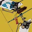
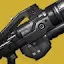

突袭 & 地牢
猎人
-

终局内容：命运眷顾真相输出
meta Clovis更新 2026.9.10适配真相输出的突袭/地牢遭遇战
-

多人需求层级钻机腿输出
强力 皮皮晓迪螺#4205更新 2026.9.10多人使用的无脑大爆输出
-

职业金棱镜猎（通用模版）
强力 紫夜非月更新 2026.9.10职业金棱镜猎
-

火刀真相嗯射流
强力 赎罪修女深田咏美更新 2026.9.10此配装适合突袭和地牢打首领用
-

第四骑士光芒复仇松身裤火猎
强力 苍影更新 2026.9.10第四骑士双增伤光芒复仇松身裤暴力输出
-
混乱裁决火刀猎
强力 shygostin#4992更新 2026.9.9碎片手松身裤双切
-

双金枪输出配装
强力 遗忘Melt更新 2026.9.9突袭地牢副本，双金枪输出配装
-

金枪猎守点清怪配装
强力 遗忘Melt更新 2026.9.9突袭地牢副本，走机制清怪套装，频繁站桩清怪场景
-

金枪猎位移+清怪配装
强力 遗忘Melt更新 2026.9.9突袭地牢副本，走机制+清怪套装，频繁释放小绿人吸引仇恨，抓钩位移快速走机制
-

金枪猎位移+清怪配装
强力 遗忘Melt更新 2026.9.9突袭地牢副本，走机制+清怪套装，适用于不要求站点，需要抓钩位移快速走机制的场景
泰坦
-

霉B喷子
强力 臭脸老登章鱼哥审核意见不触发级联点的话，阻止力全明星完美悖论是更优秀的选择；捡动能合成弹药可以通过熔炉2件套拾取和众神殿2件套补充护甲充能；不喜欢坚不可摧的玩家可以试试其他两个星象；动能裂口没什么用；泡泡盾可以续推推的30易伤更新 2026.9.10可能是泰坦最安逸的近距离输出配装？
-

火锤泰坦
强力 MK_D2#7555更新 2026.9.10适合新手的火锤泰坦配装，强度高易刷取，适用大多数平光、低压光PVE活动。缺点是强得有点无脑玩久了容易腻。
-

裂波者无限超能泰坦
强力 Elis_R更新 2026.9.10裂波者清怪，重弹输出，无限超能
-
无序喝彩
创意 臭脸老登章鱼哥审核意见好玩但是伤害不理想的玩法，适合打些血少站桩的首领更新 2026.9.10电泰坦榴弹输出配置
术士
-

终局内容：光焰之井汇编器战靴
meta Clovis更新 2026.9.9术士突袭/地牢团队通用配装
-

术士职业金裂波者
强力 纺木吏佐审核意见近战换神秘织针可以更好配合神器，同时暗影条回转更快更新 2026.9.10裂波者好玩喵
-

边缘交通
强力 RandTransit审核意见边缘交通经典款配装更新 2026.9.10娱乐输出配装
-

星火协议纯跑图
创意 我不会再逃了更新 2026.9.10地牢突袭双雷容错跑图装
-

有限点燃苍蝇头火术
创意 takt op.Destiny更新 2026.9.10无限点燃轮椅
-
亡妻回忆录之星火协议
创意 樱泽春花墨更新 2026.9.10利用整体的高频产球配合腿部支配模组+星火特性回转手雷
地牢
猎人
泰坦
-

圣火护心甲泰坦
强力 Huangpu审核意见平光地牢生存压力较小时，神器可换石板 极限突破增伤（15%）或女王兰香炉 烈焰之心（最大15%），进一步增加超能伤害更新 2026.9.10地牢轮椅
-

虫手偃月
创意 纺木吏佐更新 2026.9.10戳戳戳
-
小锤火泰坦
创意 FengZi#4812更新 2026.9.10小锤丢就完了（外置大脑）
术士
宗师/终极
猎人
-

棱镜光剑猎
meta 皮皮晓迪螺#4205审核意见也可以带焕光闪身+勇气琢面的组合 有光剑的情况下裁决定论的伤害并没有那么重要了,可以考虑带工具枪或白弹 没有圣贤2王冠2可以用vog4,但就只能绑定光能蜘蛛头了更新 2026.9.10肉的发昏的棱镜光剑猎人，携带翻新兼顾近点和远点的清杂输出能力
-
裂波者 觅敌矛隼猎
强力 实力日天审核意见职业金二号位可以考虑虫头or蜘蛛头,然后腿上插吃球回技能来保持回转更新 2026.9.10裂波者+vog套全程触发高增伤
-

威胁等级电表倒转
强力 余是猫更新 2026.9.10双动能输出武器配合神器特效疯狂产弹实现无限绿弹紫蛋
-
棱镜松身裤丢丢猎
强力 皮皮晓迪螺#4205审核意见已经带了金枪的话套装选择vog套实战在机动方面会更加舒适，碎片中的希望琢面对松身裤配装提升不大，组队时可以替换为慷慨琢面更新 2026.9.10依靠混乱无序和庆典飞行的高频伤害快速回转闪身，提供生存和伤害
-
VOG套松身裤棱镜猎
强力 爱77的118更新 2026.9.10兼具高效清怪和强力输出，永续5层冰甲+严冬帷幕减伤，频繁闪身刷冰飞镖配合"迎接风暴"碎冰高效清怪，双增伤裁决定论+混乱无序BOSS伤害也不俗
-

冰猎开荒回转套
强力 马sirFPS#5846审核意见缺少强化雷的爆发输出，但是多了星象闪身的减伤更新 2026.9.10萌新开荒超硬丢丢冰
-

棱镜丢丢猎
强力 24锅#4837审核意见正义琢面推荐改为毁灭琢面。飞升不触发充沛，推荐更换为弹药搜寻/弹药斥候模组。带彪悍修改器的情况下超能更换为黄金枪。 作者提到的“护甲充能在4层的时候终结技产绿弹有概率只会消耗一格充能”实际上是在终结技之后通过VOG4件套获得了光球，并搭配层层不绝获得了2层护甲充能，4-3+2=3。 减伤要求较高的情况下可酌情考虑下掉完全充能，更换为抗性模组。更新 2026.9.10勇士全反
-

棱镜堡垒丢丢猎
强力 Night_Core核更新 2026.9.10动能合成堡垒无限弹药
-

挽歌绊雷手
强力 ynanzzzoi更新 2026.9.10old school
-
龟刀猎
强力 yester言泽更新 2026.9.9圣贤2配合光剑快速回转复兴曲腹蛛
-

忍野丢丢
强力 yester言泽更新 2026.9.9新版忍野配合武器释放高频打雷
-

元素大师猎人
创意 madoka#9109更新 2026.9.10赐予你焕光、增幅、隐身、冰霜护甲、织造铠甲，对战斗人员施加灼烧、震颤、虚弱、减速、瓦解、割裂。
泰坦
-

合成手风暴怒吼冰泰坦
meta 萌动更新 2026.9.9释放风暴怒吼并碎冰可造成大量伤害，通过冰霜护甲和神器模组获得减伤和治疗。
-

光能甲碎冰雷泰坦
强力 溴碘砹更新 2026.9.10基于光能甲的高回转和高伤害
-

一拳超人
强力 yester言泽更新 2026.9.9雷霆一击蓄力期间高额减伤配合其余组件提供高额生存
-
棱镜b计划龟喷坦
强力 yester言泽更新 2026.9.9一套轻松获取全部生存增益的配装
-

虚空剑圣
强力 yester言泽更新 2026.9.9一刀劈不死勇士的本我不打
-

微冲腿泰坦
强力 Huangpu审核意见可跻身强度配装 星象可用好耶，利用释放期间的天上减伤作为应急生存手段 腿部携带电弧拾取模组更新 2026.9.9泰小坦的幸运裤
-

刮刮乐泰坦
创意 Clama更新 2026.9.10赫沃斯托夫搭配钻机胸与自动填装，穿上VOG套装，又能下蛋又能刮
-
棱镜好耶泰坦
创意 臭脸老登章鱼哥更新 2026.9.10三十年河东三十年河西，曾经的神如今也逐渐淡出人们的视线
术士
-

药剂包逃逸手
meta 小棒猪更新 2026.9.9 -

风暴衣无限电上术
强力 剑崎明日梦更新 2026.9.10超快回转的雷霆万钧
-
宝宝术
强力 滑稽人更新 2026.9.10依旧最高的山，最长的河
-
星火纤维棱镜术
强力 XukonVoid更新 2026.9.9通过缚丝近战获取织造铠甲，吃球获取冰霜护甲，施放强能阵获取吞食与手雷回转，无限奶雷提供续航
-
赫沃斯托夫逃逸手术士
强力 剑崎明日梦更新 2026.9.9依靠高抗性和高频技能战斗
-
苍蝇头响指术
创意 稻叶审核意见很建议副手玩纯五度故我在更新 2026.9.10通过庆典飞行和响指速转超凡从而打出更多响指
-

双飞饼
创意 全糖牲口#6067更新 2026.9.10双铸造者刀剑来回重击
-

恐惧编织缚丝术
创意 剑崎明日梦更新 2026.9.10兼具缚丝所有Buff和debuff的缚丝术集大成者
-

霜袍衣冰术
创意 剑崎明日梦更新 2026.9.10常驻多炮台高频控场
日常
猎人
-

贪婪套冰猎
强力 WJ审核意见想要伤害更高可以用碎裂雷更新 2026.9.10无限近战回转
-
赫沃斯托夫小帝喷
强力 年轻人是这样的更新 2026.9.10赫沃斯托夫快速回转超凡超能，小帝喷清理初级首领
-
混乱无序高压续航棱镜猎
创意 余是猫审核意见定位模糊 又像输出配装又像机制最后只会两边不讨好 违抗琢面本身比较鸡肋 斗牛士本质PvP枪 三勇士环境过于稀少 即使有也不应该放弃裁决定论舍本逐末 因此任何情况下都应改用裁决定论 如果想产大量绿弹有无限绿弹等手段 但改用VoG套胜在生存较好 松身裤在棱镜猎本身强大的生存素体加上VoG套的加持下基本没有意义 又没有像火刀一样刷大招的需求 总体过于追求生存 在需要较为精确的武器(例如追踪)做机制时切换武器会令其他方面大打折扣 因此也不适合部分终局内容更新 2026.9.10混乱无序+冰粪坑高频vog产球踢绿弹实现高续航
-

力量平衡棱镜猎
创意 lupus#4429更新 2026.9.10自己一个人打本玩玩吧 VOG产球回 满地都是虫子和分身
-

卡利班合成清怪推图装
创意 超新星更新 2026.9.10卡利班合成快速清怪推图
泰坦
-
集体义务虚空泰坦
创意 Guardian9944审核意见集体义务挺好玩的，配装内容修改了点更新 2026.9.10宛如像在cos老外的刮刮乐那般宁静
-

英勇礼服光剑泰坦
创意 Guardian9944更新 2026.9.10哦累哇刚大木！
-

炸死所有猪
创意 咕咕猪子审核意见手雷未击杀目标/手雷击杀目标数量和质量较低时，比较依赖焰灵所提供的技能回转，需要使用者频繁跑位。更新 2026.9.9我爱丢融合雷欧耶耶
术士
-
左键清屏和谐棱镜术
强力 年糕明更新 2026.9.10大招超快，激光笔长按左键清屏
-

坏死+合成棱镜术（贾诩术）
强力 樱泽春花墨更新 2026.9.10坏死之灵dot伤害配合vog套产球和星象神器批量产线虫，合成之灵配合电好耶清群怪
-

复古虚空术进化版
创意 Flos_#4022更新 2026.9.10年3的老东西加了点新内容 牛头转手雷近战 有怪就是无缝
-
赫沃斯托夫星火术士
创意 超新星更新 2026.9.10依靠神器和赫沃斯托夫的高频产球可实现常驻焕光，焕光状态造成伤害或击杀就可快速回转融合雷
-

meta电术
创意 年糕明更新 2026.9.10适合萌新，门槛超低+大招巨快
-

海胆头电术
创意 樱泽春花墨更新 2026.9.10梦回侠盗赛季
-
霜袍术
创意 纺木吏佐更新 2026.9.10扔雷喵
-

虚式·茈 五条悟虚空术士
创意 许诺Styx更新 2026.9.10猎人金枪头泰坦陨星胸，我们术士也要有！抱着裂波者滋，滋完就开大招！
-

牢大术士
创意 错令晚星绘天明更新 2026.9.10烈日凌空
-

间桐樱术
创意 yester言泽更新 2026.9.9半自动产虫虫挂机配装
-
悬停术
创意 年糕明更新 2026.9.9靠缠结自循环悬停
功能性
猎人
-

死亡信使机制弹药套
强力 Night_Core核更新 2026.9.10死亡信使kf溢冰高效清怪产弹走机制
-

冰猎运动套
创意 抽刀断水审核意见突袭/地牢跑图超级跳更新 2026.9.10猎人运动套
术士
PVP
猎人
-

66连杀兰花
强力 AloneOvO更新 2026.9.10命运2自己的杀人刀
-
虚空猎pvp
强力 小宁更新 2026.9.1085aa玫瑰，比鹰月都好用，你值得尝试
-
虚空猎pvp
强力 小宁更新 2026.9.9轮椅
泰坦
-
棱镜泰坦pvp meta 配装
meta 小宁更新 2026.9.10涨条快，移速快，回复高，吃球还给缚丝甲，打33首选泰坦配装
-

四码头 高阶暴君
meta 小宁更新 2026.9.1066/33皆可，无论是否触发武器大师都是秒人